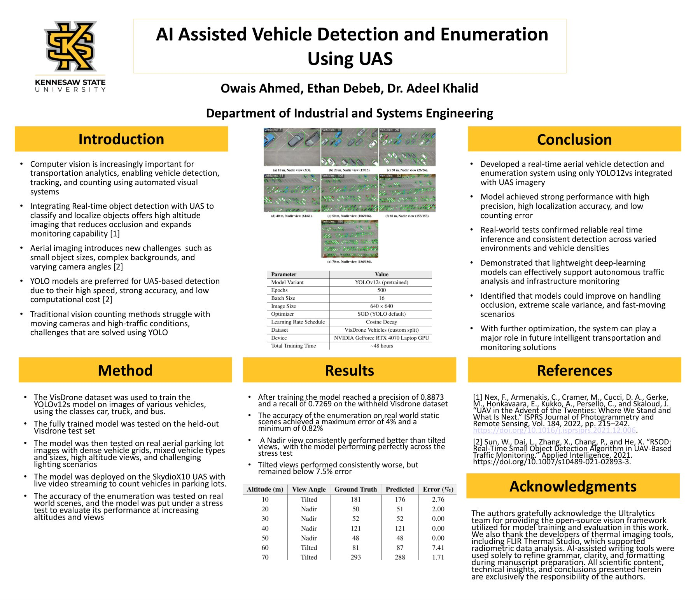

Research Output
Publications
Conference research on UAV-based computer vision for real-time traffic analytics.
Conference Paper
AIAA AVIATION 2026 Forum
Real-Time Vehicle Detection and Enumeration Using Unmanned Aerial Systems
A. Khalid, O. Ahmed and E. Debeb · AIAA 2026-4753
Unmanned aerial systems (UAS) equipped with high-resolution cameras have become powerful tools for large-scale traffic monitoring, infrastructure assessment and urban planning. This research presents a real-time vehicle detection and counting framework that integrates the YOLOv12 object detection model with aerial imagery from a UAS platform, fine-tuned on the VisDrone dataset to handle varying altitudes, lighting conditions and dense urban scenes. Testing demonstrated detection accuracy and frame rates suitable for real-time traffic analytics and aerial surveillance.
Presented in San Diego, CA · June 8–12, 2026 · Read the paper (DOI)
Research Poster
AI-Assisted Vehicle Detection and Enumeration Using UAS
Owais Ahmed, Ethan Debeb and Dr. Adeel Khalid · Department of Industrial and Systems Engineering, Kennesaw State University
- Trained YOLOv12s on the VisDrone dataset (car, truck and bus classes), reaching 0.8873 precision and 0.7269 recall on the held-out set
- Vehicle counts on real-world static scenes had a maximum error of 4% and a minimum of 0.82%
- Nadir (straight-down) views consistently outperformed tilted views, which still stayed below 7.5% error
- Deployed on a Skydio X10 UAS with live video streaming to count vehicles in parking lots

Click the poster to view it full size.